Обзор
Эта статья продолжается с того места, на котором мы остановились в уроке по анимированным Blendshapes. В нем рассказывается, как настроить карты морщин для улучшения существующей анимированной сцены blendshape в Maya и экспортировать их в CRYENGINE. Он опирается на знания, полученные в Урок по анимированным Blendshapes, который является необходимым предшественником этого руководства по картам морщин.
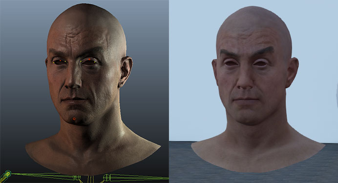
Обычно карты морщин добавляются к анимации blendshape, чтобы добавить деталей человеческому лицу. CRYENGINE в настоящее время поддерживает 12 масок морщин и 1 карту нормалей морщин, которые управляются 4 суставами от "blend_control_01" до "..04" (в качестве вспомогательных объектов для хранения анимированных данных, когда область морщин плавно появляется и исчезает).
CRYENGINE ищет экспортированные суставы "blend_control_01"чтобы"...04"и их".перевести" атрибут и растушевывает маски морщин.
Учебные файлы
Исходные сцены Maya ASCII с экспортированными файлами CRYENGINE:
sdk_wrinkle_map_tutorial.zip (39мб)
(Помните, что вам все еще понадобится модифицированный «SkeletonList.xml», в который вы добавили скелет CHR из этого урока. На тот случай, если вы захотите пропустить все эти шаги и захотите открыть персонажа в CE Character Tool: SkeletonList.zip )
Начиная с версии движка 5.6, список скелетов больше не используется, а это означает, что вы можете игнорировать любые ссылки на него на этой странице.
Настройте свою нормальную карту морщин
Это не углубленное руководство о том, как создавать модели высокого разрешения и внутриигровые модели! Обычно ваши скульптуры морщин в высоком разрешении будут основаны на скульптуре в нейтральной позе в ZBrush, MudBox или 3d-Coat. После этого вам нужно запечь карты нормалей морщин. В этой статье показаны нужные вам результаты и текущий способ, которым CRYENGINE обрабатывает базовую карту нормалей (левое изображение ниже) и карту нормалей морщин (правое изображение ниже):
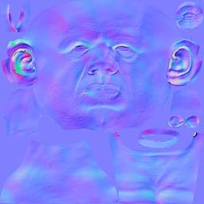 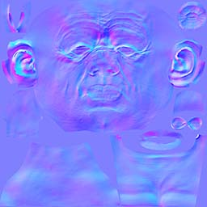
В зависимости от вашего рабочего процесса вам необходимо объединить различные карты нормалей морщин в базовую карту нормалей.
Прежде чем смешивать слои карты нормалей в Photoshop с использованием режима наложения «Наложение», вы можете поискать в Google, как правильно объединять карты нормалей.
Это руководство предназначено для демонстрации технологии, поэтому некоторые показанные элементы, такие как карта нормалей с идеальными морщинами, могут быть не такими, какими они были бы в среде производства игр.
Настройка масок от морщин
Текстура маски, используемая для определения областей и диапазонов, на которые будут влиять морщины, представляет собой 8-битный 32-битный файл *.tif на каждый канал (включая альфа-канал).
Различные каналы — красный, зеленый, синий и альфа-канал — разделены на диапазоны, что позволяет независимо обращаться к более чем 3 или 4 каналам и воздействовать на разные области лица. Следовательно, у вас есть 12 зон морщин, которые вы можете контролировать.
В настоящее время это «жестко запрограммировано», поэтому, если вы используете более 3 каналов на один канал карты, потребуются изменения кода.
Различные диапазоны распределены по каналам равномерно - от 0 до 255 с интервалом 20 между первым и вторым диапазонами и разрывом 10 между вторым и третьим диапазонами. Это предотвращает смешивание каналов друг с другом.
Таблицы настройки
Первый столбец зависит от ваших предпочтений и от того, как вы, как художник по установке, хотите управлять вспомогательными шарнирами blend_control_01 - 04. CRYENGINE просто читает переводить значения из blend_control_01 до 04 для управления маской морщин. Это все, что нужно CRYENIGNE, однако убедитесь, что вы сопоставляете атрибут драйвера с диапазоном значений [0.. 100], например, используя узел «multiplyDivide», как в предыдущем уроке Animated Blendshape:
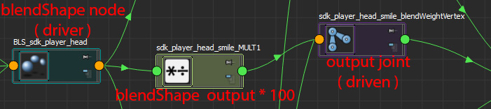
Таблица настроек для мастера настройки Maya
Maya (blendShape) Атрибут драйвера узла | Maya Имя вспомогательного соединения | Совместный атрибут |
|---|---|---|
лоб | blend_control_01 | .translateX |
глабелла (область переносицы) | " | .translateY |
левая щека (улыбка) | " | .translateZ |
косоглазие левого нижнего глаза | blend_control_02 | .translateX |
гусиные лапки слева, морщины | " | .translateY |
... (независимо от области лица) | " | .translateZ |
... | blend_control_03 | .translateX |
... | " | .translateY |
... | " | .translateZ |
... | blend_control_04 | .translateX |
... | " | .translateY |
... | " | .translateZ |
Таблица настроек для Photoshop/художника текстур
Maya (blendShape) Атрибут драйвера узла | RGB Цвета как маска |
|---|---|
лоб | Красный: 0–75 |
глабелла | Красный: 95-170 |
левая щека (улыбка) | Красный: 180-255 |
косоглазие левого нижнего глаза | Зеленый: 0-75 |
гусиные лапки слева, морщины | Зеленый: 95-170 |
... (независимо от области лица) | Зеленый: 180-255 |
... | Синий: 0-75 |
... | Синий: 95-170 |
... | Синий: 180-255 |
... | Альфа: 0-75 |
... | Альфа: 95 - 170 |
... | Альфа: 180 - 255 |
Настройте контент в Photoshop
Откройте Photoshop и нарисуйте маски в соответствии с цветовыми диапазонами, указанными в таблице настроек для Photoshop/Texture Artist. Для маски в этом уроке использовался красный 255 для маски щек, красный 170 для маски морщин на носу и красный 75 для маски лба.
Не размывайте края маски морщин на фоне неправильного цвета!
Установите правильный цвет фона, отображаемый ниже, когда вы рисуете края маски постепенного появления/исчезновения:
Красный 180-255: используйте цветной фоновый слой RGB (180,0,0)
Красный 95-170: используйте цветной фоновый слой RGB (95,0,0)
Красный 0-75: используйте фоновый слой цвета RGB (0,0,0)
Повторите это для диапазонов зеленого, синего и альфа и объедините цветовые маски с их отдельными каналами RGBA в Photoshop.
Как раскрасить диапазоны масок в Photoshop:
- Для каждого из четырех каналов (RGBA) создайте три пары слоев переднего плана (FG) и фона (BG) — всего шесть слоев для каждого канала (красный канал указан ниже:
Пара Красный 1:
Слой FG с красным значением -> 255
Слой BG со значением красного цвета -> 180.
Пара Красный 2:
Слой FG со значением красного -> 170.
Слой BG со значением красного -> 95.
Пара Красный 3:
Слой FG со значением красного -> 75.
Слой BG с красным значением -> 0
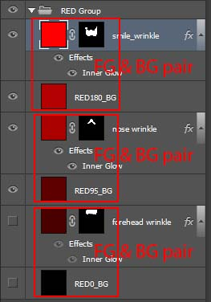
- Повторите описанный выше процесс для зеленого, синего и альфа-каналов.
- На слое FG «выделите лассо» область морщин, например область морщин на лбу, а затем используйте выделение в качестве маски.
- Добавьте стиль слоя «Внутреннее свечение» F/x. В разделе «Внутреннее свечение» выберите соответствующий красный цвет BG и настройте другие параметры, как показано ниже, однако не стесняйтесь менять все по своему усмотрению. Однако в результате должен получиться плавный «сливающийся» край:
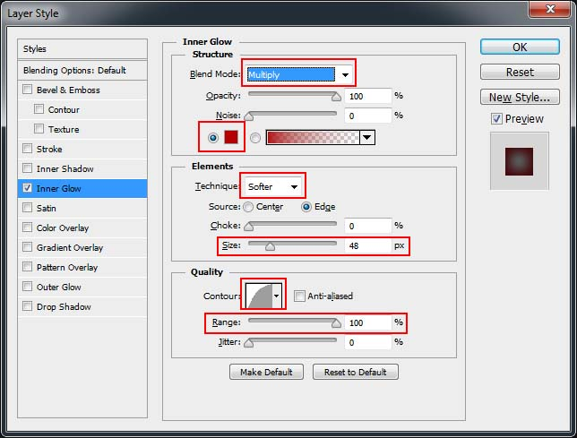
- Скопируйте пары FG и BG слоев RED и сверните их. Повторно примените соответствующую маску из выделения и переместите ее в новую папку группы:
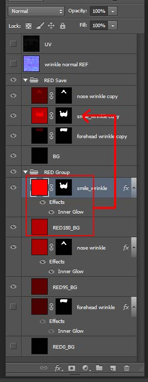
- Повторите этот процесс для двух других областей диапазона RED, а также для зеленого, синего и альфа-диапазонов.
- На этом этапе вы можете захотеть изменить порядок свернутых слоев.
Вот как выглядит окончательный результат для замаскированной области RED в Photoshop:
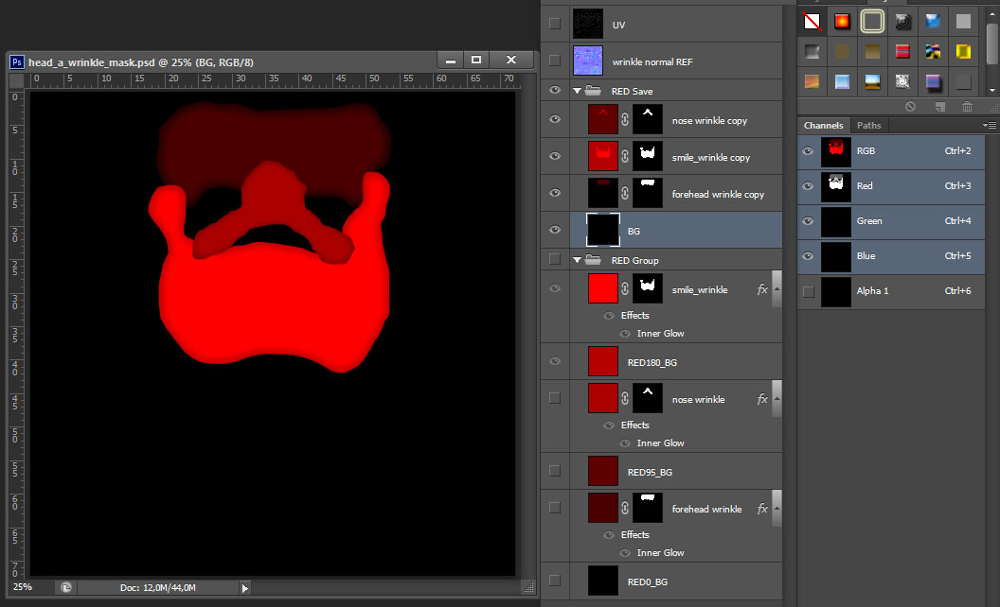
Экспортировать в CryTif:
Затем экспортируйте текстуру маски как CryTif.
Будьте внимательны и выберите правильный набор настроек экспорта CryTif. Вы должны экспортировать маску морщин в линейное цветовое пространство до CRYENGINE. Используйте "WrinkleMask_Linear"предустановлено в CryTif.На момент написания пресет еще не представлен. Замените «rc.ini» (используйте поиск в корневом каталоге CRYENGINE) на этот: rc.iniили добавьте эти строки внизу вашего rc.ini:
[WrinkleMask_Linear]
формат пикселей = A8R8G8B8
powof2=1
мип-карты=1
цветовое пространство = линейное, линейноеИзображения ниже представляют собой образец изображения (т. е. если вы использовали все 12 масок). На правом изображении показан только канал RED:
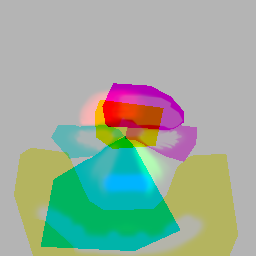
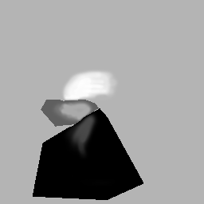
Настройте контент в Maya
В Maya вам нужно создать четыре соединения от "blend_control_01" до "blend_control_04". Свяжите их с «корневым» соединением иерархии экспорта, как показано ниже:
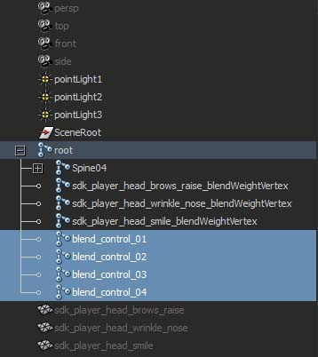
Если вы перешли к уроку Animated Blendshape Tutorial, вам необходимо переименовать два файла «cryExportNode» и базовый «_group» соответственно. Это позволяет избежать конфликта с именем бывшего скелета *.CHR:
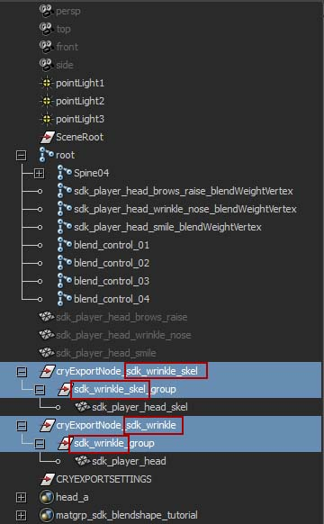
Эти соединения имеют входные соединения с соответствующими атрибутами «.translate». Атрибуты могут передаваться из любого вывода узла, обычно это атрибут «.weights» узла blendShape или некоторые «Set Driven Keys». Значения атрибута «.translate» должны быть сопоставлены с [0.. 1] на [0–100] и обратно в [0.. 1], как показано ниже. ("blend_control_02" до "blend_control_04") остаются нетронутыми, потому что у нас есть только 3 blendshapes, подключенные к "blend_control_01.translateX", ".translateY" и ".translateZ" ). Наконец, вам нужно создать узлы multiplyDivide и соединения в редакторе узлов, как показано на снимке экрана ниже:
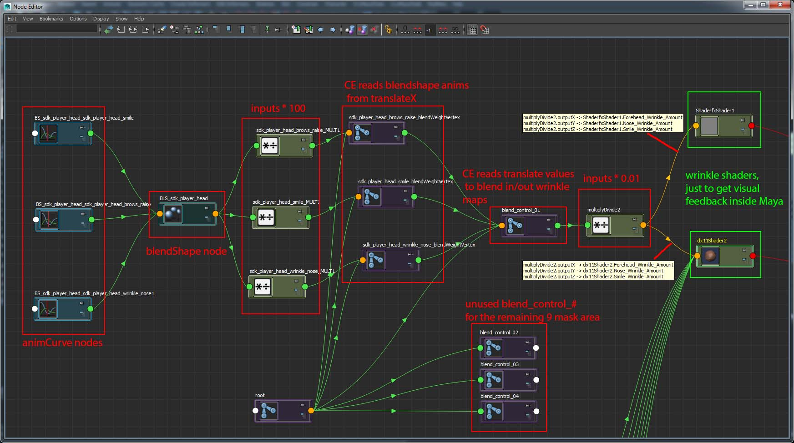
Проверьте закладки редактора узлов Maya, где был сохранен макет верхнего графика.Если вы хотите настроить все 12 областей маски морщин, вам необходимо создать три других узла multiplyDivide и подключить их к атрибуту «blend_control_02» от «.tx» до «.tz».
Следующие шаги (5–8) не обязательны для работы карт морщин CRYENGINE — они предназначены для предварительного просмотра вашей анимации. Поэтому вы можете перейти к шагу 9 этого раздела, где финальная сцена карты морщин экспортируется из Maya.
Прежде чем перейти к элементам шейдера в Maya, убедитесь, что у вас установлен «Viewport 2.0» Maya. Загрузите плагины «dx11shader» и «shaderFX», установите механизм рендеринга «DirectX 11», а механизм рендеринга области просмотра — «Viewport 2.0». (После этих действий необходимо перезапустить Maya!):
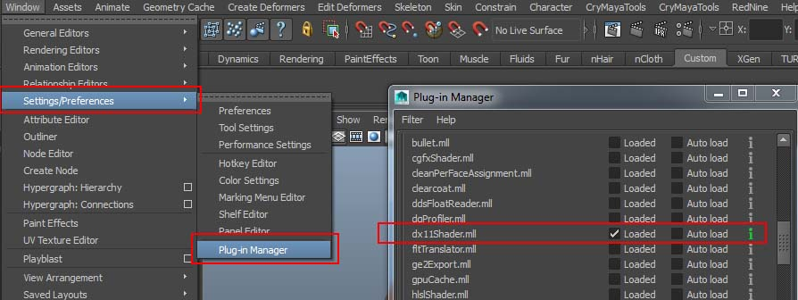
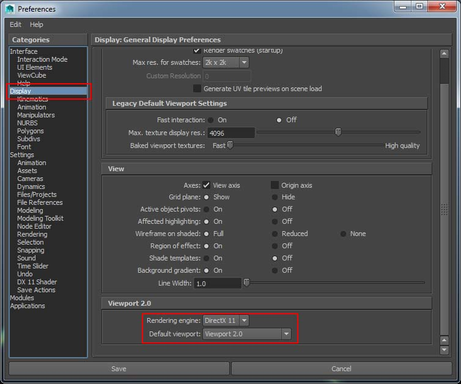
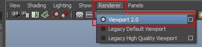
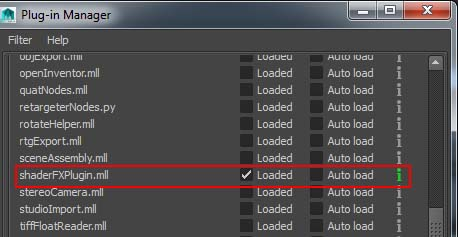
Откройте HyperShade пользователя Maya. Чтобы визуализировать анимацию эффекта карты морщин, для Maya 2015+ были созданы материалы «Shaderfx» и «dx11Shader». Найдите материал Shaderfx и используйте редактор атрибутов, чтобы открыть окно Shaderfx:
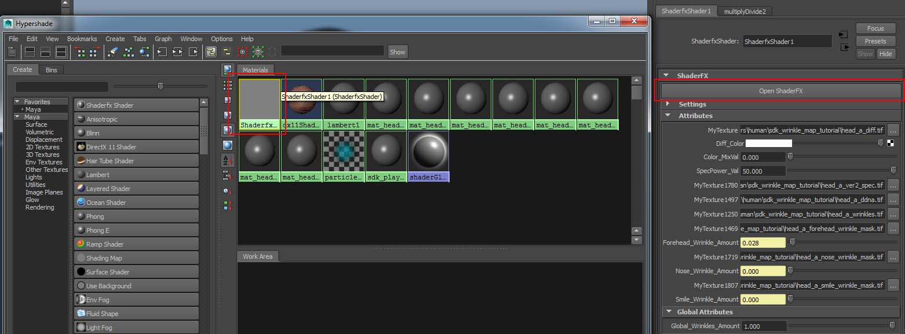
Материал Shaderfx имеет только 3 маски морщин. Они извлекаются из слоев масок, которые были созданы в Photoshop ранее, однако вы можете дублировать узлы «Карта текстур», «Плавающий», «Умножить» и «Добавить», а также добавить дополнительные маски и повторно подключить их к графу узлов самостоятельно:
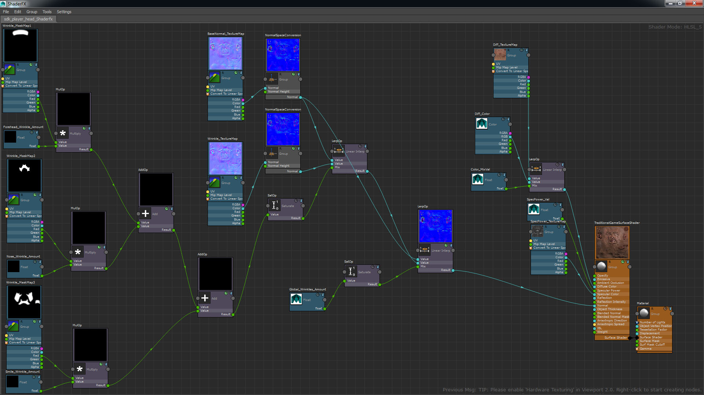
Несколько замечаний относительно шейдера морщин ShaderFX:
- Три узла значений «Плавающее» (названные как <WRINKLE_NAME> + «_Amount») в левой части окна ShaderFX Maya были открыты. Они будут управляться атрибутом ("blend_control_01" + ".translate").
- Узлы, связанные с цветом/диффузией/бликами, можно заменить простым серым цветом, если вы просто хотите сосредоточиться на морщинах.
- Был добавлен «Плавающий» узел с именем «Global_Wrinkles_Amount» для глобального управления всеми складками.
- Все нормальные значения были зафиксированы в диапазоне [0.. 1]
- В некоторых случаях вам необходимо перенаправить все карты текстур в графе Shaderfx. Найдите три маски морщин: карту нормалей, карту нормалей морщин, диффузную карту и карту бликов.
- Когда материал Shaderfx будет завершен, повторно импортируйте его обратно как dx11Shader.
Прокрутите временную шкалу Maya, чтобы увидеть, как эффект карты морщин проявляется и исчезает. На скриншотах ниже представлены образцы предоставленной сцены Maya:
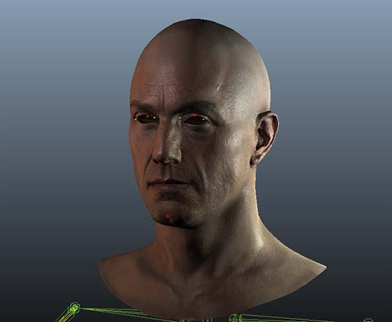
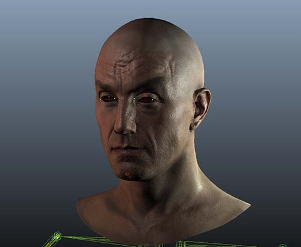
блендшейп OFF
диффузная карта ON
нормальная карта ON
карта морщин OFF
блендшейп ON
диффузная карта ON
нормальная карта ON
карта морщин ON
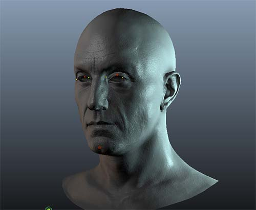
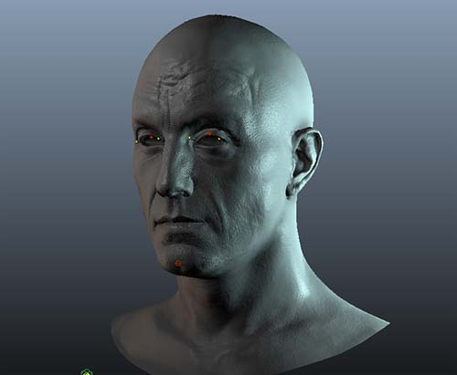
блендшейп OFF
диффузная карта OFF
нормальная карта ON
карта морщин OFF
блендшейп OFF
диффузная карта OFF
нормальная карта ON
карта морщин ON
Теперь пришло время экспортировать ресурсы в CRYENGINE. Откройте инструмент экспорта на полке Crytek. Экспортируйте два crytekExportNodes, материал и анимацию на полку Crytek. Снимок экрана ниже (с областями, отмеченными красным) поможет вам правильно экспортировать данные, в противном случае просто откройте обучающую сцену "*_end" Maya:
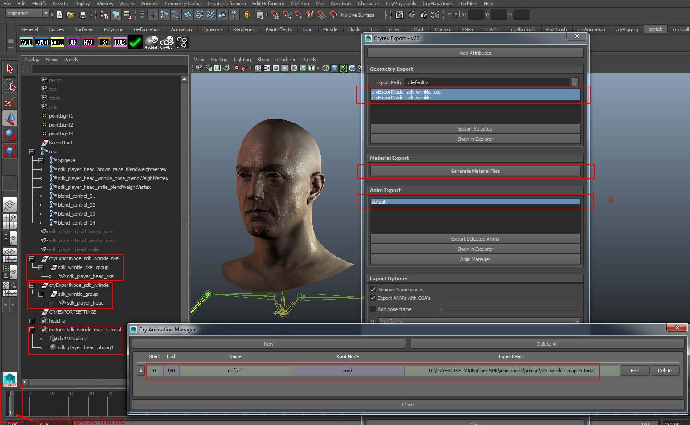
Настройка контента в CRYENGINE
Следующие шаги покажут вам, как создать материал для карт морщин в CRYENGINE Material Editor и добавить "AnimObject" в редакторе Sandbox.
Это руководство основано на ресурсах, использованных в примере проекта GameSDK. Мы рекомендуем вам скачать это с База данных активов, импортируйте его в программу запуска, запустите оттуда, а затем создайте новый уровень.
См. эта страница чтобы узнать, как импортировать проект в программу запуска. (Папка по умолчанию для образца проекта GameSDK при загрузке: C:\Program Files (x86)\Crytek\CRYENGINE Launcher\Crytek\gamesdk_<XXX>\GameSDK).
В этом руководстве эта папка будет называться «папка GameSDK».
Поскольку были добавлены четыре вспомогательных сустава от "blend_control_01" до "..04", Файлы скелета *.CHR, *.SKIN и *.I_CAF необходимо повторно экспортировать. Также проверьте, нужно ли вам реэкспортировать материал. При желании материал «sdk_wrinkle_tutorial» можно позже заменить новым материалом морщин или вы можете изменить «head_a.mtl», чтобы он работал в качестве материала морщин, и назначить голову этому материалу — выберите то, что вам больше всего нравится.
Откройте редактор CRYENGINE Sandbox, войдите в Character Tool и добавьте новый скелет в SkeletonList. Не забудьте сохранить SkeletonList!
Будьте особенно осторожны с именем вашего скелета и файла *.CHR, чтобы они отличались от имен, используемых в анимированном уроке Blendshape (если вы пришли из предыдущей сцены урока).
Создайте новый CDF и назовите его "sdk_wrinkle_tutorial.cdf".
Добавьте «*.CHR» в поле скелета и добавьте «Skin Attachment», указывающий на экспортированный вами файл «*.SKIN». Не забудьте активировать «Скинирование программного обеспечения»!
Нажмите на показанный файл *.CHR, чтобы настроить файл «*.CHRPARAMS». Добавьте и укажите каталог, содержащий экспортированную вами анимацию «по умолчанию».
Как только анимация «по умолчанию» появится на левой панели Character Tool, создайте и сохраните новый файл «*.ANIMSETTINGS». Пропустите и нажмите «OK» в окне ошибки (отсутствуют «События анимации») при появлении запроса.
Возможно, вам придется сохранить все, выйти и перезапустить редактор Sandbox, а затем снова открыть новое руководство по морщинам *.CDF.
Эффект «Карта морщин» пока не поддерживается на видовом экране Character Tool. Следовательно, вам нужно будет создать новый демо-уровень или использовать существующий демо-уровень в редакторе Sandbox:
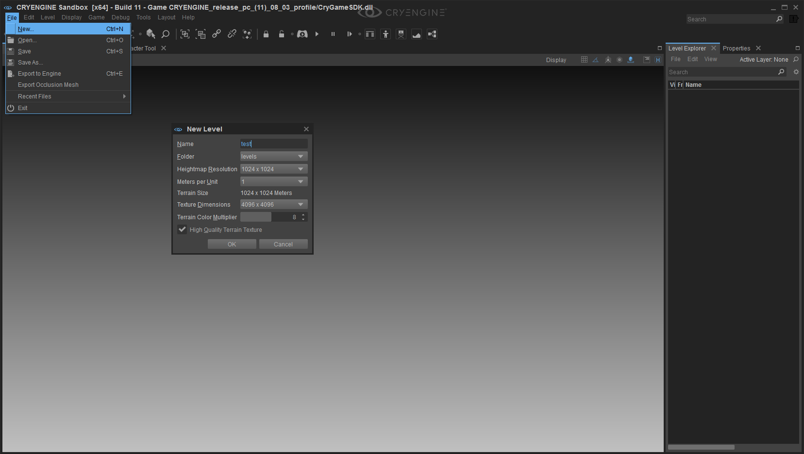
Вам нужно будет поместить в сцену «Anim Entity». Перетащите и щелкните «AnimObject» из инструмента «Создать объект» в сцену:
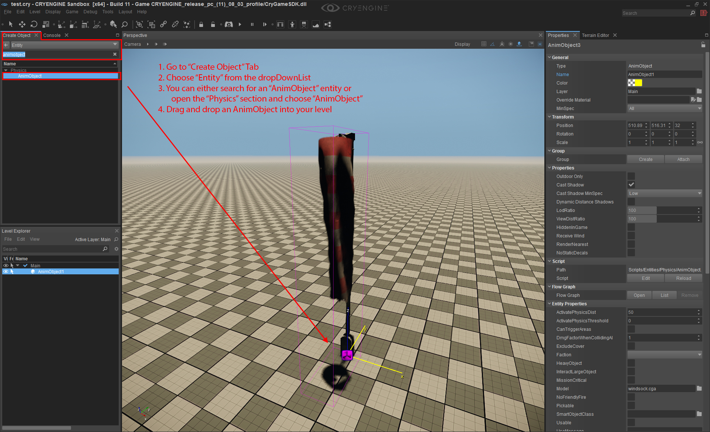
Замените windsock.cga в «Модель» на «sdk_wrinkle_tutorial.cdf»:
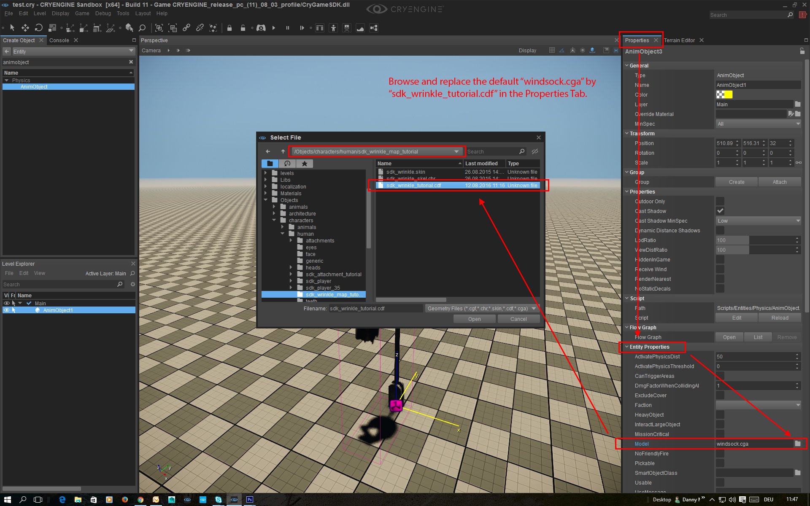
В свойствах «AnimObject» прокрутите вниз до «Рендеринг» и установите флажок «WrinkleMap». Также убедитесь, что для параметра «Анимация» установлено значение «по умолчанию» и установлен флажок «Цикл» (зеленые области на скриншоте ниже). Наконец, когда вы экспортировали имя своей анимации как «по умолчанию», это избавит вас от необходимости вводить правильное имя.:
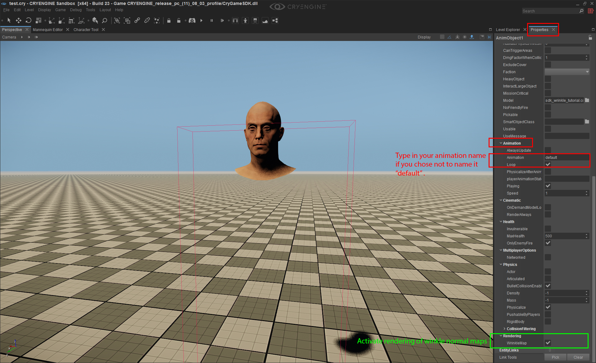
Теперь вам нужно создать материал карты морщин. Перейдите в Material Editor и настройте экспортированный вами материал для персонажа ("sdk_wrinkle.skin"). Некоторые параметры откроются первыми, если вы уже установили шейдер «Человеческая кожа» и добавили «Карту нормалей морщин» и «Текстуру маски морщин» в два «Пользовательских» слота раздела «Карты текстур»:

Возможно, вы захотите настроить параметры «Зеркальность» (карта) и «Гладкость», если хотите увеличить неровности.
Это не руководство по шейдеру «Человеческая кожа». Пожалуйста, найдите этот особенный шейдер в документации CRYENGINE!
Кроме того, следует добавить немного света. Добавьте CRYENGINE «EnvironmentProbe» и измените «Время суток», чтобы лучше визуализировать эффект карты морщин, иначе сетка головы персонажа может быть плохо освещена:

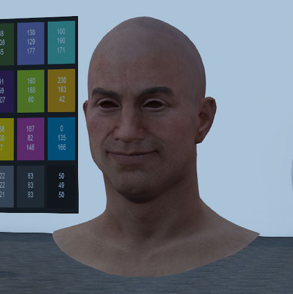
карты морщин ON карты морщин OFF
Резюме
В этом уроке у вас есть;
Объединили ваши карты нормалей морщин (морщины на лбу, морщины при косоглазии и т. д.) в одну. карта нормалей морщин
Нарисуйте маски морщин (область лба, область левого нижнего глаза и т. д.) в составную композицию. маска от морщин текстурная карта
Экспортировал текстуру маски морщин с помощью экспорт линейного цветового пространства предустановка
Создал четыре»blend_control_01"чтобы"...04" суставы контролировать морщины
Экспортировал анимацию в *.I_CAF файл для включения анимации от «blend_control_01» до «..04».
Экспортировал *.SKIN файл (чтобы включить соединения «blend_control_01» и «..04»)
Экспортировал *.CHR файл (чтобы включить соединения «blend_control_01» и «..04»)
Настройте материал карты морщин в разделе "Человеческая кожа" шейдер из CRYENGINE
Добавил "AnimObject" объект в редакторе Sandbox, где вы активировали эффект карты морщин